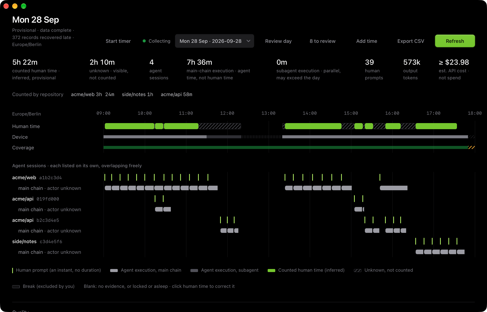

Local development diary
How long did you really work?
tracr is a time ledger for people who work with several coding agents at once. It shows what happened, how long you actually worked, what it cost, and what you can trust.
One file for Apple Silicon and Intel. Smaller single-architecture downloads: Apple Silicon · Intel.

tracr · 2026-09-28 · Europe/Berlin · provisional (not reviewed) Human time, inferred (provisional) 322 min acme/web 204 side/notes 60 acme/api 58 by basis: inferred 322 Unknown, not counted 130 10:14–10:15 1 unresolved window 10:27–10:28 1 unresolved window 11:18–12:20 62 conflicting evidence 13:20–13:24 4 conflicting evidence 14:46–15:05 19 unresolved window 15:17–15:20 3 unresolved window 15:32–15:50 18 unresolved window 16:12–16:34 22 unresolved window Non-work (excluded by you) 0 Human evidence span 09:02–17:34 = 512 min: an upper bound, not a total Agent activity (not human time) exec min span tokens Claude Code acme/web 283 09:02–16:22 26.6 M Codex acme/api 35 10:15–15:19 2.0 M +? Claude Code acme/api 72 11:50–16:20 7.6 M Claude Code side/notes 66 16:34–17:45 7.3 M 456 execution minutes within 523 min of agent wall clock; sessions overlap, never merged 43.5 M tokens across sessions Estimated API cost · API-equivalent estimate, not spend · catalog 2026-10-24.1 as of 2026-10-01 Claude Code acme/web 14.65 USD Codex acme/api >= 2.59 USD Claude Code acme/api 4.10 USD Claude Code side/notes 2.64 USD identified usage of the day >= 23.98 USD
The projects are invented, the numbers come from tracr running on them. >= means a floor: part of the usage could not be priced, and tracr says so instead of rounding it away.
Why tracr exists
Three questions that are surprisingly hard to answer
You run Claude Code in one project, Codex in another, and a third session is still open from this morning.
- 01
How long did I actually work on issue X today?
Session lifetimes overstate effort, and adding parallel sessions double-counts.
- 02
What did each of my agents do?
Collapsing them into one “active session” hides work.
- 03
What did it cost?
Token counts, list prices, subscriptions and real bills are different quantities, and most tools show an estimate that reads like spend.
tracr reads the evidence your tools already leave on disk, keeps every session visible on its own, counts your time once, and never pretends to know more than it does.
What makes it different
Honest numbers, not impressive ones
- 01
Agent time is not your time
Every agent session has its own timeline and usage. Human minutes are inferred separately and counted at most once, even when five sessions overlap.
- 02
Unknown stays unknown
If it is not established that you worked, the time is shown as unknown and not counted until you decide. No silent guessing, no fake confidence number.
- 03
Money kinds never mix
Estimated API cost, a provider’s own figure, subscription cost and real expense are separate kinds. An estimate is labelled “API-equivalent estimate, not spend”. A missing price is unpriced, never
0. - 04
Immutable evidence, rebuildable views
The ledger is append-only. Everything you see is derived from it and can be rebuilt. Your corrections survive a rebuild, and changes show up as discrepancies, never as silent edits.
- 05
You can fix the numbers
Confirm as work, mark as break, split, retarget, add manual entries, run a timer, then review the day. Every correction is revisioned and can be undone.
- 06
Local-first and metadata-only
No account, no sync, no upload. Prompt and tool text is never stored. tracr reads usage, timing and structure.
How it works
From evidence to a reviewed worklog
Sources are Claude Code and Codex session files, git, OS idle and lock state, and your own timers.
- Observationimmutable ledger
- Normalized events
- Activityagent timelines + human timeline
- Work statuscounted · unknown · break
- Attributionproject · issue
- Reviewed worklogrevisions
Reading stays safe by design: transcripts are opened read-only, every source is version-gated and fails visibly, unknown record types are quarantined and counted, and re-importing the same history adds nothing. Provider folders are read only after you approve them.
Status
Pre-release, built in the open
tracr grows in vertical slices. Today the desktop app runs on macOS. Windows builds the non-UI crates in CI only and makes no parity claim.
- S1Done
Evidence, derivation, cost, Codex
Claude Code and Codex import (including compressed Codex rollouts), day view, estimated cost and provider-reported figures,
tracr day, menu-bar summary. - S2Implemented
Corrections, manual time, review
Corrections, manual entries and timer, reviewed day revisions, discrepancies. Hands-on validation of the desktop UI is still in progress.
- S3Next
Projects, mappings, issue suggestions
Plus GitHub and Huly as read-only context.
- S4Planned
Export, finalization, deletion, hooks
Everything that turns a reviewed day into something you can hand on.
Install
Download, or two commands, then look at a day
macOS on Apple Silicon and Intel. The app is signed with a Developer ID and notarized by Apple. The tracr command is inside the app; Homebrew puts it on your PATH.
brew tap JoKeks2023/tracr brew trust JoKeks2023/tracr # Homebrew asks you to trust a third-party tap once brew install --cask tracr # the desktop app and the `tracr` command # command line only: brew install tracr-cli
# tracr reads nothing until you approve a folder tracr roots add --provider ~/.claude/projects tracr roots add --provider ~/.codex/sessions tracr import tracr rebuild tracr day
Prefer a file? Download the universal .dmg, open it and drag tracr to Applications. Prefer an installer? The .pkg installs the app and also puts tracr on your PATH. You can also build from source (cargo install --path apps/cli); more files are on the release page.
Privacy
It cannot read what it never stored
tracr never stores prompt text, assistant messages or tool output. It reads structure, timing, model names, token counts and tool names. The desktop window has no filesystem, shell or network capability, and nothing leaves your machine. Searching or re-reading message content is therefore deliberately impossible. A few sources are opt-in and store only numbers and names: the plan limits Claude Code reports, hook events (when a session starts, waits or stops), and the list of running sessions in your Claude folder. Notifications are shown by the system and go nowhere else.